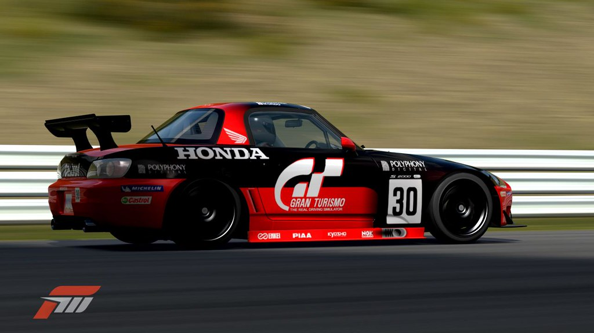
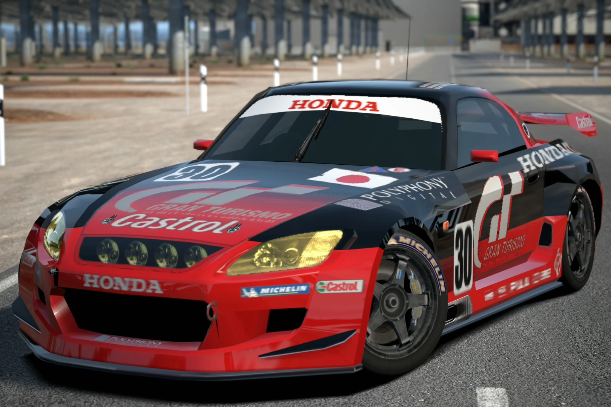
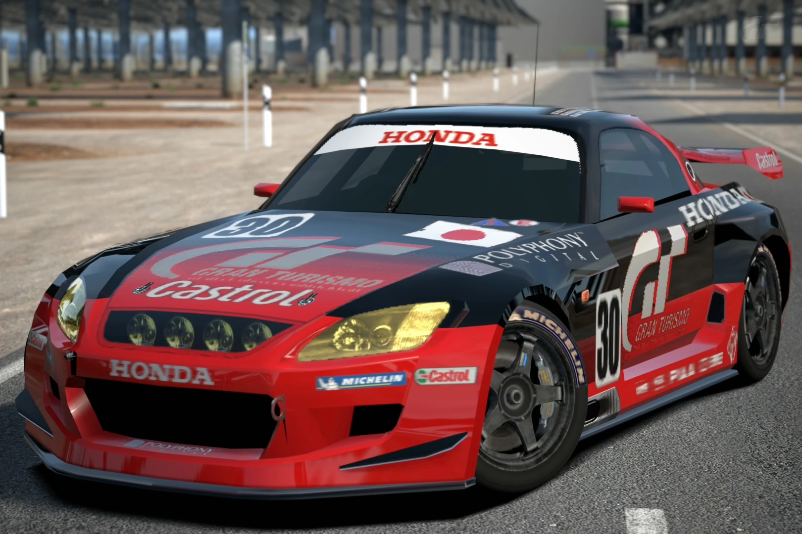
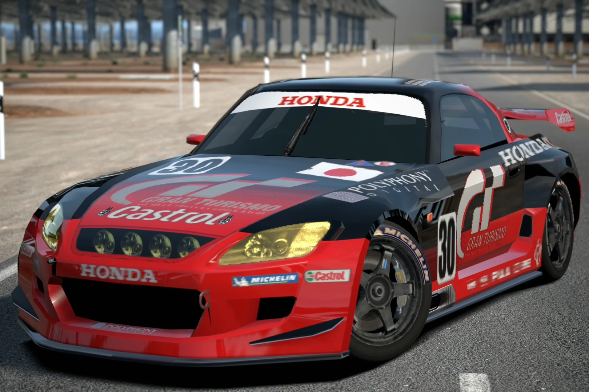
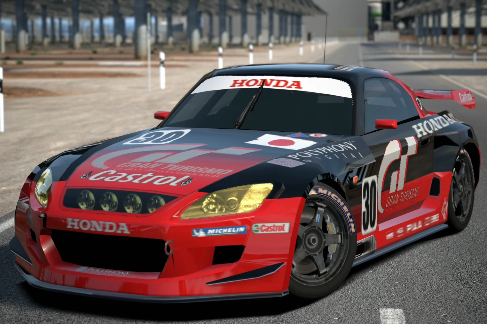

 



Fecha de la carrera: 06/02/2025
Longitud del circuito: 3951 m
Nº de vueltas: 25
El campeonato online de Gran Turismo 7 es una competición para los amantes de la velocidad y la precisión. Participa y demuestra tus habilidades en la pista contra los mejores pilotos en línea.
El campeonato consta de 6 carreras de aproximadamente 40 minutos de duración y una sesión de clasificación de 10 minutos. Se dispone de 14 plazas que se cubrirán por orden de inscripción. Los participantes que no logren una plaza inicial quedarán en lista de reserva.
El coche protagonista será el S2000 LM Race Car con un diseño único para todos los participantes, cambiando únicamente el color y el dorsal. Los colores se asignarán por sorteo.
Las carreras se llevarán a cabo los jueves a las 22:30, con la sala abierta a las 22:00 para resolver posibles problemas de conexión. La hora límite para solucionar problemas será las 22:30.
Descargar Reglamento en PDF